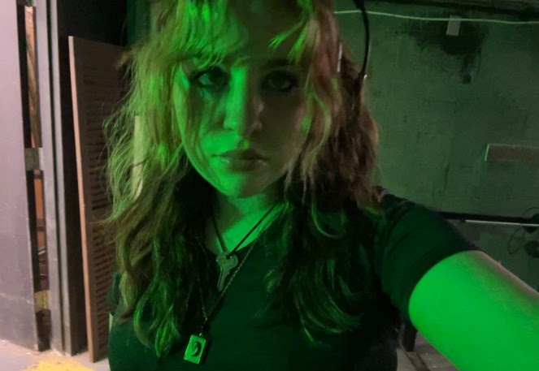
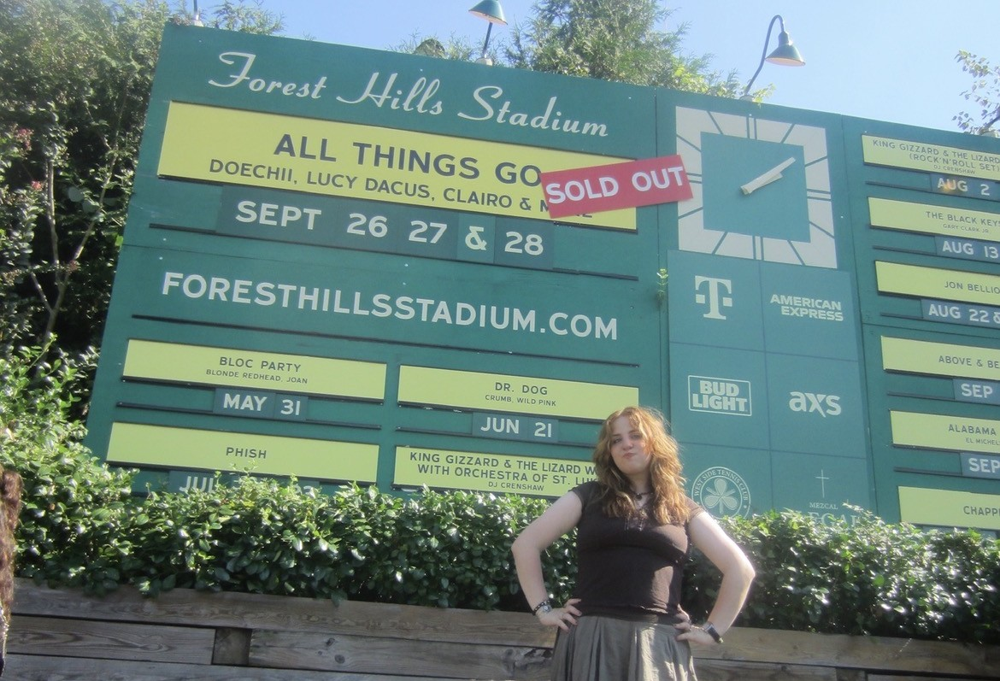
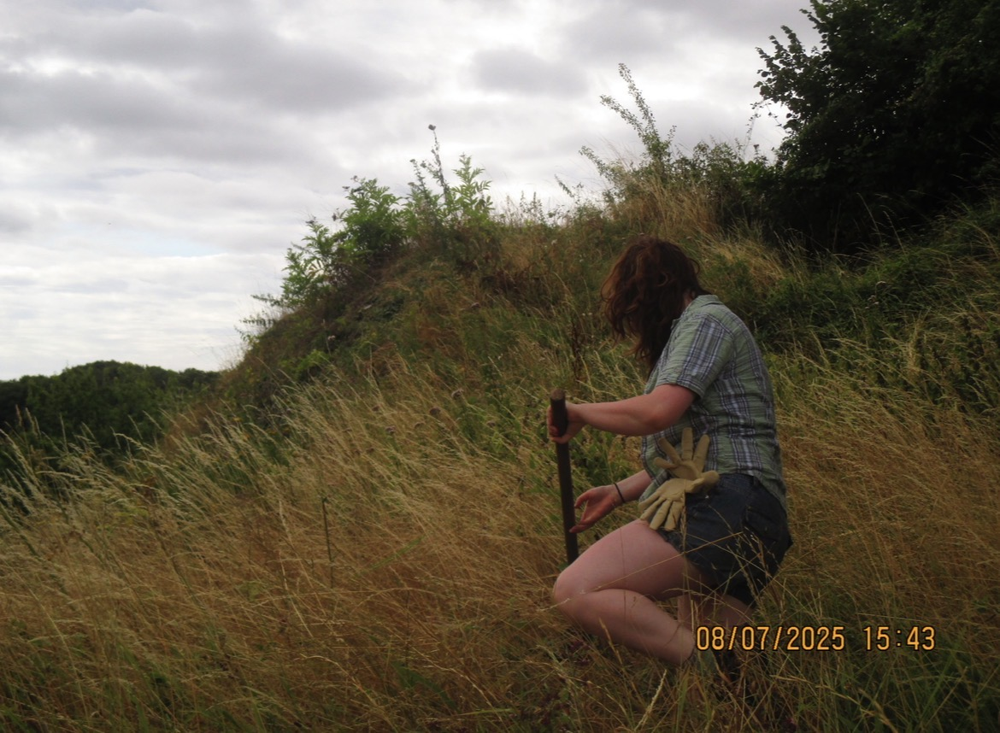
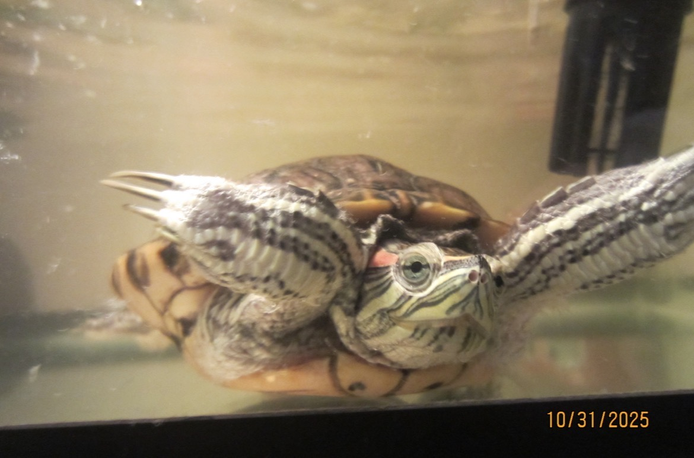

Stella Wexler Rush is an experienced technical theater professional with expertise in props, paints, hair, and makeup. She is majoring in technical theater at Fiorello LaGuardia High School of Music & Art and the Performing Arts in New York City. In addition to LaGuardia productions, she worked as Assistant Director for a community theater production in the summer of 2025. She will be graduating in June 2026 and will be attending Oberlin College, where she plans to major in Cinema & Media Studies and Psychology.

I enjoy going to concerts, and have seen performers including Mitski, Chappell Roan, Boygenius, and many others.

I love to travel and have visited 12 countries and 20 U.S. states.

I have a pet turtle named Sandy who is 22 years old.